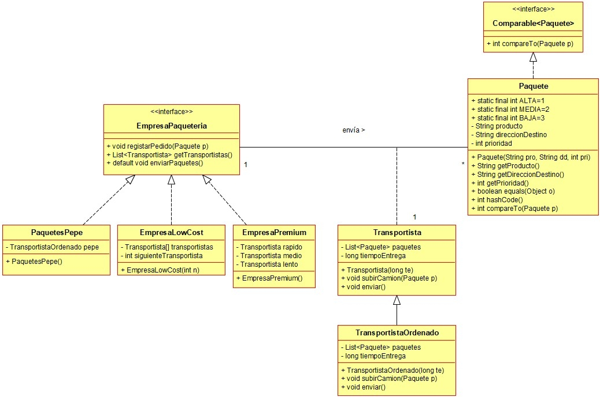

Ejercicio 22 : Siguiendo con el ejercicio anterior, programa la clase EmpresaLowCost, que es una empresa de paquetería en la que guarda una lista de transportistas y los paquetes se asignan de forma cíclica a los transportistas.

-
Constructor: Crea una empresa con la cantidad de transportistas pasada como parámetro. Cada transportista tarda un tiempo entre 40 y 80 minutos en entregar un paquete. La propiedad “siguienteTransportista” guarda la posición del siguiente transportista al que se le asignará un paquete.
-
registrarPedido: asigna el paquete al transportista que toca, según lo que haya en la propiedad “siguienteTransportista”, que pasará al siguiente.